autonomics
Read + preprocess + analyze + visualize cross-platform omics data
Source:vignettes/using_autonomics.Rmd
using_autonomics.RmdAbstract
autonomics is created to make cross-platform omics analysis intuitive and enjoyable. It contains import + preprocess + analyze + visualize one-liners for RNAseq, MS proteomics, SOMAscan and Metabolon platforms and a generic importer for data from any rectangular omics file. With a focus on not only automation but also customization, these importers have a flexible formula/ block/contrastdefs interface which allows to define any statistical formula, fit any general linear model, quantify any contrast, and use random effects or precision weights if required, building on top of the powerful limma platform for statistical analysis. It also offers exquisite support for analyzing complex designs such as the innovative contrastogram visualization to unravel and summarize the differential expression structure in complex designs. By autonomating repetitive tasks, generifying common steps, and intuifying complex designs, it makes cross-platform omics data analysis a fun experience. Try it and enjoy :-).
read + preprocess + analyze + visualize
Autonomics offers import + preprocess + analyze + visualize one-liners for RNAseq, MS proteomics, SOMAscan and Metabolon platforms, as well a generic importer for data from any rectangular omics file. We will discuss each of these in more detail in the following sections, but all of them follow the following general steps:
-
read
- exprs, features, samples
- extract subgroups from sampleids / samplefile
- wrap these into a SummarizedExperiment
-
preprocess
- normalize
- log2 transform
- impute in a platform-aware fashion
- filter
-
analyze
- plot sample distributions
- plot detections (absent/present)
- plot pca biplots
-
fit the linear model
~0+subgroup - quantify contrasts between subsequent factor levels and plot volcanoes
RNAseq
Autonomics provides ready-to-use importers for both count as well as BAM files, which read / preprocess / analyze RNAseq data. Specific to RNAseq is counting reads using Rsubread::featureCounts (for read_rna_bams)), normalizing for library composition (cpm) or gene length (tpm), estimating voom precision weights, and using these in linear modeling. Let’s illustrate both of these on example datasets:
read_rnaseq_counts
Billing et al. (2019) studied the differentiation of embryonic (E00) into mesenchymal stem cells (E00.8, E01, E02, E05, E15, E30), with similar properties as bone-marrow mesenchymal stem cells (M00). Importing the RNAseq counts:
require(autonomics, quietly = TRUE)
##
## Attache Paket: 'autonomics'
## The following object is masked from 'package:stats':
##
## biplot
object <- read_rnaseq_counts(file = download_data('billing19.rnacounts.txt'),
pca = TRUE, fit = 'limma', plot = TRUE)
## Read C:\Users\abhagwa\AppData\Local\autonomics\autonomics\Cache/46a42cb13d9_billing19.rnacounts.txt
## Infer subgroup from sample_ids
## Infer subgroup from sample_ids
## Preprocess
## Keep 22855/56269 features: count >= 10 (~0 + subgroup)
## pseudocount 0.5
## cpm: tmm scale libsizes
## cpm
## voom: ~0 + subgroup
## log2
## Add PCA
## lmFit(~0 + subgroup, weights = assays(object)$weights)
## contrast ndown nup
## 1: E00.8-E00 8 36
## 2: E01-E00.8 0 0
## 3: E02-E01 0 31
## 4: E05-E02 124 18
## 5: E15-E05 3179 4165
## 6: E30-E15 2104 1198
## 7: M00-E30 1579 1523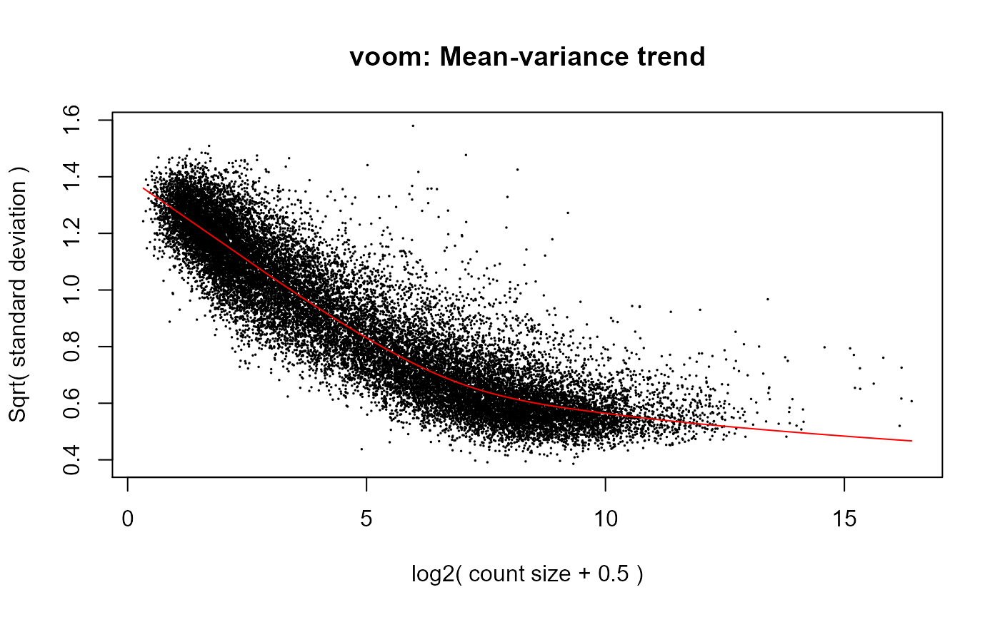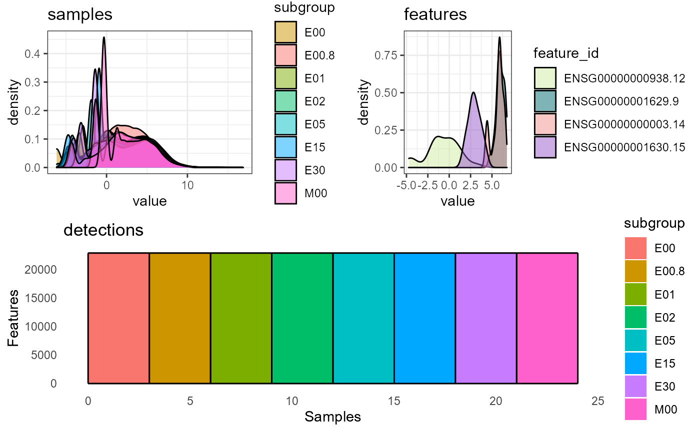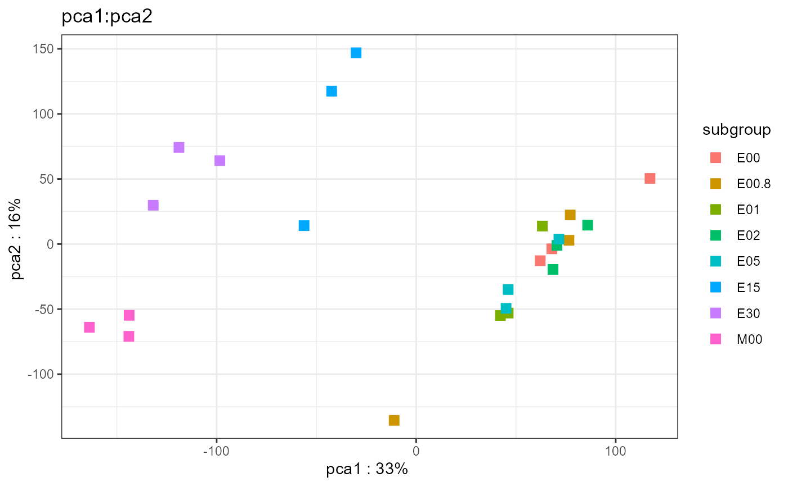
read_rnaseq_counts(sfile)
The sfile/sfileby arguments in both importers allow to merge in sample data from a separate file by a specified column. This is especially useful in clinical datasets, such as the GSE161731 Covid-19 dataset, for which both a counts file as well as a sample file can be downloaded from GEO:
basedir <- file.path(tempdir(), 'datasets')
dir.create(basedir, showWarnings = FALSE, recursive = TRUE)
if (!dir.exists(file.path(basedir, 'GSE161731'))){
GEOquery::getGEOSuppFiles("GSE161731", baseDir=basedir)
}
## Setting options('download.file.method.GEOquery'='auto')
## Setting options('GEOquery.inmemory.gpl'=FALSE)
## size
## C:\\Users\\abhagwa\\AppData\\Local\\Temp\\RtmpOgH3zs/datasets/GSE161731/GSE161731_counts.csv.gz 8347405
## C:\\Users\\abhagwa\\AppData\\Local\\Temp\\RtmpOgH3zs/datasets/GSE161731/GSE161731_counts_key.csv.gz 2443
## C:\\Users\\abhagwa\\AppData\\Local\\Temp\\RtmpOgH3zs/datasets/GSE161731/GSE161731_key.csv.gz 2398
## C:\\Users\\abhagwa\\AppData\\Local\\Temp\\RtmpOgH3zs/datasets/GSE161731/GSE161731_xpr_nlcpm.csv.gz 16839511
## C:\\Users\\abhagwa\\AppData\\Local\\Temp\\RtmpOgH3zs/datasets/GSE161731/GSE161731_xpr_tpm_geo.txt.gz 23859414
## isdir
## C:\\Users\\abhagwa\\AppData\\Local\\Temp\\RtmpOgH3zs/datasets/GSE161731/GSE161731_counts.csv.gz FALSE
## C:\\Users\\abhagwa\\AppData\\Local\\Temp\\RtmpOgH3zs/datasets/GSE161731/GSE161731_counts_key.csv.gz FALSE
## C:\\Users\\abhagwa\\AppData\\Local\\Temp\\RtmpOgH3zs/datasets/GSE161731/GSE161731_key.csv.gz FALSE
## C:\\Users\\abhagwa\\AppData\\Local\\Temp\\RtmpOgH3zs/datasets/GSE161731/GSE161731_xpr_nlcpm.csv.gz FALSE
## C:\\Users\\abhagwa\\AppData\\Local\\Temp\\RtmpOgH3zs/datasets/GSE161731/GSE161731_xpr_tpm_geo.txt.gz FALSE
## mode
## C:\\Users\\abhagwa\\AppData\\Local\\Temp\\RtmpOgH3zs/datasets/GSE161731/GSE161731_counts.csv.gz 666
## C:\\Users\\abhagwa\\AppData\\Local\\Temp\\RtmpOgH3zs/datasets/GSE161731/GSE161731_counts_key.csv.gz 666
## C:\\Users\\abhagwa\\AppData\\Local\\Temp\\RtmpOgH3zs/datasets/GSE161731/GSE161731_key.csv.gz 666
## C:\\Users\\abhagwa\\AppData\\Local\\Temp\\RtmpOgH3zs/datasets/GSE161731/GSE161731_xpr_nlcpm.csv.gz 666
## C:\\Users\\abhagwa\\AppData\\Local\\Temp\\RtmpOgH3zs/datasets/GSE161731/GSE161731_xpr_tpm_geo.txt.gz 666
## mtime
## C:\\Users\\abhagwa\\AppData\\Local\\Temp\\RtmpOgH3zs/datasets/GSE161731/GSE161731_counts.csv.gz 2021-03-23 19:21:39
## C:\\Users\\abhagwa\\AppData\\Local\\Temp\\RtmpOgH3zs/datasets/GSE161731/GSE161731_counts_key.csv.gz 2021-03-23 19:21:40
## C:\\Users\\abhagwa\\AppData\\Local\\Temp\\RtmpOgH3zs/datasets/GSE161731/GSE161731_key.csv.gz 2021-03-23 19:21:40
## C:\\Users\\abhagwa\\AppData\\Local\\Temp\\RtmpOgH3zs/datasets/GSE161731/GSE161731_xpr_nlcpm.csv.gz 2021-03-23 19:21:48
## C:\\Users\\abhagwa\\AppData\\Local\\Temp\\RtmpOgH3zs/datasets/GSE161731/GSE161731_xpr_tpm_geo.txt.gz 2021-03-23 19:21:59
## ctime
## C:\\Users\\abhagwa\\AppData\\Local\\Temp\\RtmpOgH3zs/datasets/GSE161731/GSE161731_counts.csv.gz 2021-03-23 19:21:33
## C:\\Users\\abhagwa\\AppData\\Local\\Temp\\RtmpOgH3zs/datasets/GSE161731/GSE161731_counts_key.csv.gz 2021-03-23 19:21:39
## C:\\Users\\abhagwa\\AppData\\Local\\Temp\\RtmpOgH3zs/datasets/GSE161731/GSE161731_key.csv.gz 2021-03-23 19:21:40
## C:\\Users\\abhagwa\\AppData\\Local\\Temp\\RtmpOgH3zs/datasets/GSE161731/GSE161731_xpr_nlcpm.csv.gz 2021-03-23 19:21:40
## C:\\Users\\abhagwa\\AppData\\Local\\Temp\\RtmpOgH3zs/datasets/GSE161731/GSE161731_xpr_tpm_geo.txt.gz 2021-03-23 19:21:48
## atime
## C:\\Users\\abhagwa\\AppData\\Local\\Temp\\RtmpOgH3zs/datasets/GSE161731/GSE161731_counts.csv.gz 2021-03-23 19:21:39
## C:\\Users\\abhagwa\\AppData\\Local\\Temp\\RtmpOgH3zs/datasets/GSE161731/GSE161731_counts_key.csv.gz 2021-03-23 19:21:40
## C:\\Users\\abhagwa\\AppData\\Local\\Temp\\RtmpOgH3zs/datasets/GSE161731/GSE161731_key.csv.gz 2021-03-23 19:21:40
## C:\\Users\\abhagwa\\AppData\\Local\\Temp\\RtmpOgH3zs/datasets/GSE161731/GSE161731_xpr_nlcpm.csv.gz 2021-03-23 19:21:48
## C:\\Users\\abhagwa\\AppData\\Local\\Temp\\RtmpOgH3zs/datasets/GSE161731/GSE161731_xpr_tpm_geo.txt.gz 2021-03-23 19:21:59
## exe
## C:\\Users\\abhagwa\\AppData\\Local\\Temp\\RtmpOgH3zs/datasets/GSE161731/GSE161731_counts.csv.gz no
## C:\\Users\\abhagwa\\AppData\\Local\\Temp\\RtmpOgH3zs/datasets/GSE161731/GSE161731_counts_key.csv.gz no
## C:\\Users\\abhagwa\\AppData\\Local\\Temp\\RtmpOgH3zs/datasets/GSE161731/GSE161731_key.csv.gz no
## C:\\Users\\abhagwa\\AppData\\Local\\Temp\\RtmpOgH3zs/datasets/GSE161731/GSE161731_xpr_nlcpm.csv.gz no
## C:\\Users\\abhagwa\\AppData\\Local\\Temp\\RtmpOgH3zs/datasets/GSE161731/GSE161731_xpr_tpm_geo.txt.gz no
object <- read_rnaseq_counts(
file = file.path(basedir, 'GSE161731/GSE161731_counts.csv.gz'),
sfile = file.path(basedir, 'GSE161731/GSE161731_counts_key.csv.gz'),
sfileby = 'rna_id',
subgroupvar = 'gender',
pca = TRUE,
fit = 'limma',
plot = TRUE)
## Read C:\Users\abhagwa\AppData\Local\Temp\RtmpOgH3zs/datasets/GSE161731/GSE161731_counts.csv.gz
## Merge sdata: C:\Users\abhagwa\AppData\Local\Temp\RtmpOgH3zs/datasets/GSE161731/GSE161731_counts_key.csv.gz
## Preprocess
## Keep 18974/60675 features: count >= 10 (~0 + gender)
## pseudocount 0.5
## cpm: tmm scale libsizes
## cpm
## voom: ~0 + gender
## log2
## Add PCA
## lmFit(~0 + gender, weights = assays(object)$weights)
## contrast ndown nup
## 1: Male-Female 62 61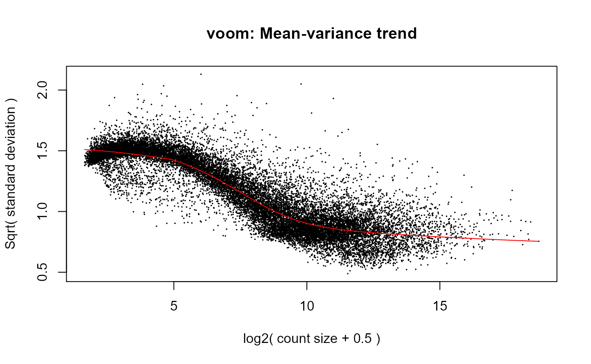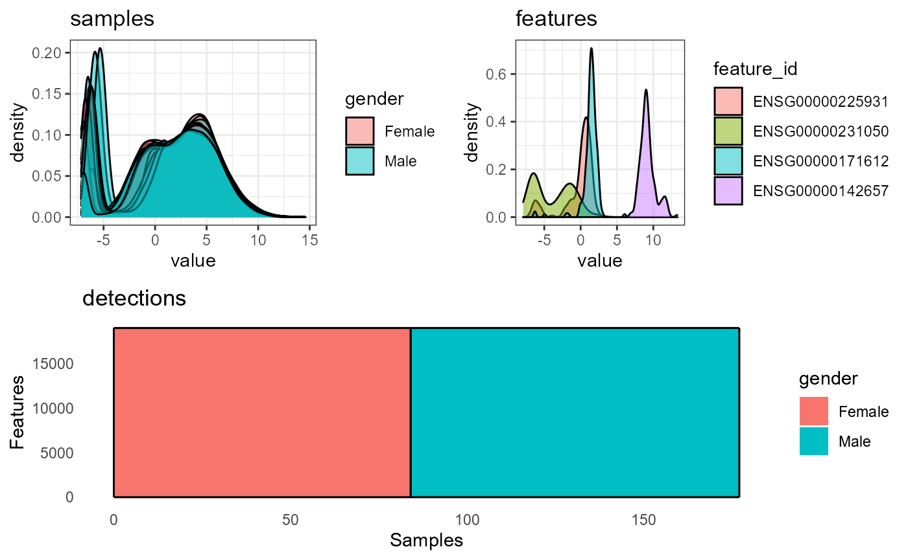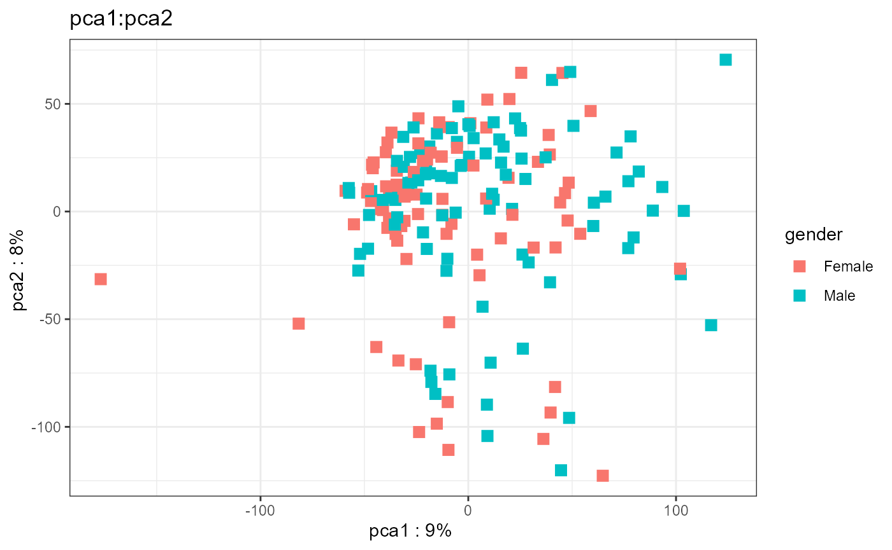
read_rnaseq_counts(block)
The block argument in both importers allows to model e.g. subject_id as a random effect, which is very common in clinical data. Repeating the GEO Covid-19 analysis with subject_id as a block effect. Outcomment the line below, which takes a few minutes to complete.
#object <- read_rnaseq_counts(
# file = '~/autonomicscache/datasets/GSE161731/GSE161731_counts.csv.gz',
# sfile = '~/autonomicscache/datasets/GSE161731/GSE161731_counts_key.csv.gz',
# sfileby = 'rna_id',
# subgroupvar = 'gender',
# block = 'subject_id')read_rnaseq_bams
Billing et al. (2016) compared three types of stem cells: embryonic (E), embryonic differentiated into mesenchymal (EM), and bone-marrow mesenchymal (BM). Importing a downsized version of the RNAseq BAM files (with only a subset of all reads):
if (requireNamespace('Rsubread')){
object <- read_rnaseq_bams(
dir = download_data('billing16.bam.zip'),
paired = TRUE,
genome = 'hg38',
pca = TRUE,
fit = 'limma',
plot = TRUE)
}
## Lade nötigen Namensraum: Rsubread
## unzip
## Lade nötigen Namensraum: org.Hs.eg.db
##
## Infer subgroup from sample_ids
## Preprocess
## Keep 57/28395 features: count >= 10 (~0 + subgroup)
## pseudocount 0.5
## cpm: tmm scale libsizes
## cpm
## voom: ~0 + subgroup
## log2
## Add PCA
## lmFit(~0 + subgroup, weights = assays(object)$weights)
## contrast ndown nup
## 1: E-BM 11 12
## 2: EM-E 12 10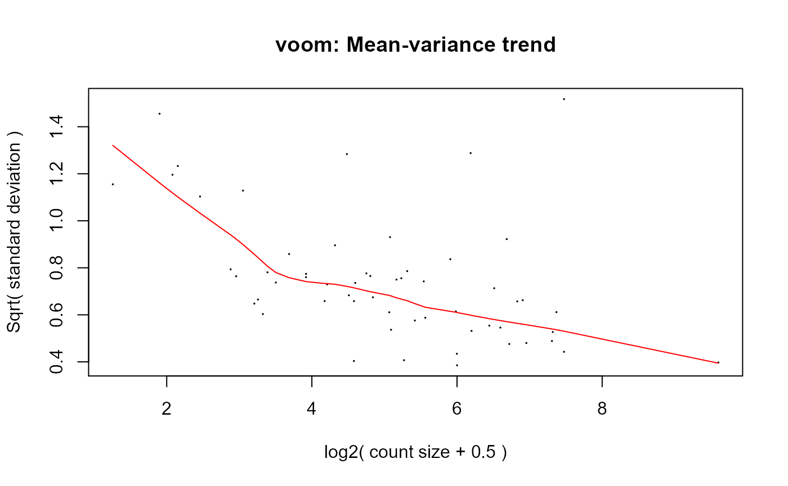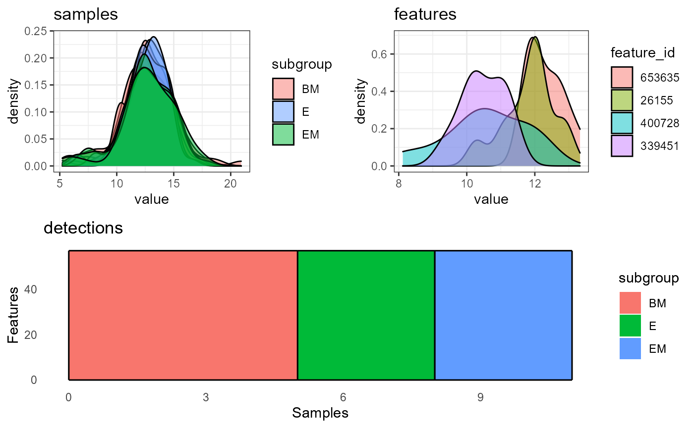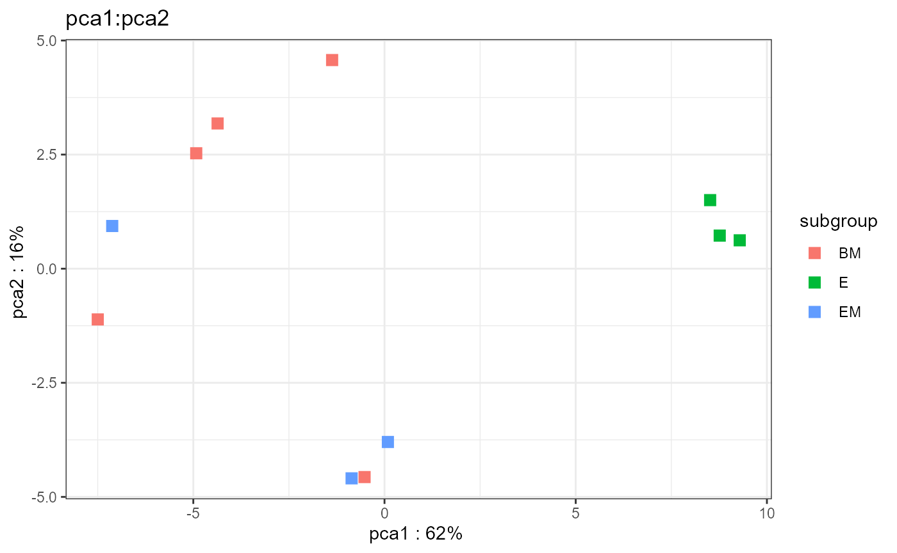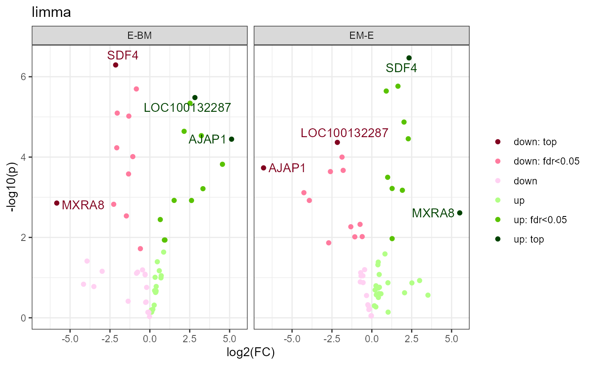
cpm/tmm/voom effects on power
Proper preprocessing leads to increased power:
file <- download_data('billing19.rnacounts.txt')
# log2counts
object <- read_rnaseq_counts(file,
cpm = FALSE, voom = FALSE, fit = 'limma', verbose = FALSE, plot = FALSE)
## Infer subgroup from sample_ids
colSums(summarize_fit(object, 'limma')[, -1])
## ndown nup
## 456 61
# log2cpm
object <- read_rnaseq_counts(file,
cpm = TRUE, voom = FALSE, fit = 'limma', verbose = FALSE, plot=FALSE)
## Infer subgroup from sample_ids
colSums(summarize_fit(object, 'limma')[, -1])
## ndown nup
## 5458 5107
# log2cpm + voom
object <- read_rnaseq_counts(file, # log2 cpm + voom
cpm = TRUE, voom = TRUE, fit = 'limma', verbose = FALSE, plot=FALSE)
## Infer subgroup from sample_ids
colSums(summarize_fit(object, 'limma')[, -1])
## ndown nup
## 6994 6971Proteingroups/phosphosites
A popular approach in (DDA) MS proteomics data analysis is to use MaxQuant to produce proteinGroups.txt and phospho (STY)Sites.txt files. These can be imported using read_proteingroups / read_phosphosites, which :
-
Read
- quantification cols: LFQ intensities, Normalized Ratios, or Reporter intensities
- feature cols: id, Majority protein IDs, Protein names, Gene names, Contaminant, Potential contaminant, Reverse
- subgroups from sampleids / samplefile
-
Preprocess
- Convert 0 -> NA (they represent lack of detection)
- Log2 transform
- Rm contaminants/reverse/unreplicated features
- Impute consistent NAs with values drawn from a half-normal distribution around zero
- For phosphosites: compute occupancies by subtracting protein expressions
-
Analyze
- plot sample distributions
- plot detections
- pca biplot
- Fit a linear model
- Quantify contrasts between subsequent factor levels and plot volcanoes
LFQ intensities
An LFQ intensities example is the Fukuda et al. (2020) dataset, which compares the proteome of 30d zebrafish juveniles versus adults using label-free quantification. In the volcano plot measured values are shown with circles, imputed values as triangles.
object <- read_proteingroups(file = download_data('fukuda20.proteingroups.txt'),
pca = TRUE, fit = 'limma', plot = TRUE)
## Read C:\Users\abhagwa\AppData\Local\autonomics\autonomics\Cache/46a4255b2df6_fukuda20.proteingroups.txt
## Infer subgroup from sample_ids
## Replace 0->NA for 15654/41112 values (in 3998/6852 features of 6/6 samples)
## Log2 transform
## Filter features
## Retain 6735/6852 features: ~Reverse != "+"
## Retain 6692/6735 features: contaminant != '+'
## Retain 6679/6692 features: non-zero, non-NA, and non-NaN for some sample
## Filter 4534/6679 features: expr > 0 for at least two samples in some subgroup
## Transform exprs
## Impute systematic nondetects for 762/4534 features in 6/6 samples
## Add PCA
## lmFit(~0 + subgroup)
## contrast ndown nup
## 1: Adult-X30dpt 1619 876
 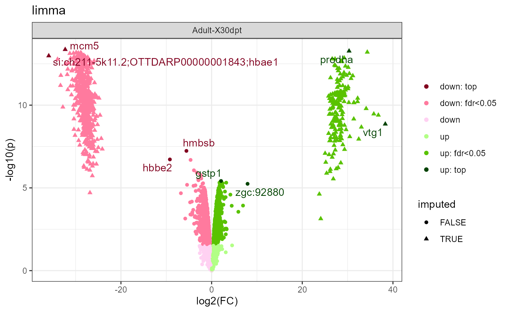
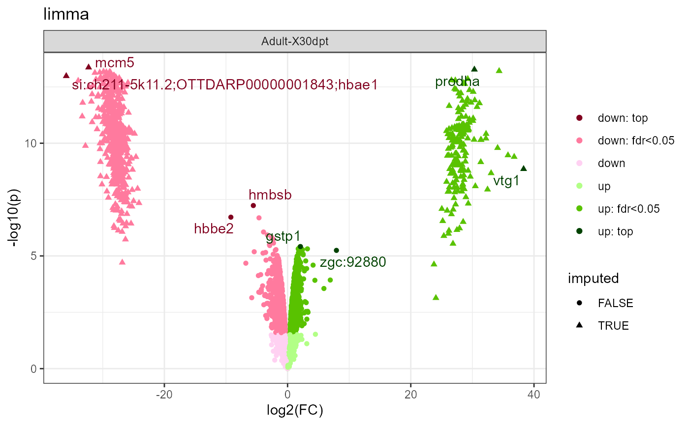
Normalized ratios
Normalized ratios were used in the proteomics profiling of the earlier described Billing et al. (2019) study, which examined the differentiation of embryonic stem cells (E00) into mesenchymal stem cells (E01,E02, E05, E15, E30), and compared these to bone-marrow derived mesenchymal stem cells (M00). The proteomics profiling experiment was performed using MS1 labeling: a light (L) labeled internal standard was created by mixing all samples in equal amounts, the subsequent samples were either medium (M) or heavy (H) labeled. Not all label combinations were of interest, and the select_subgroups argument allows to specifies which subgroup combinations to retain:
object <- read_proteingroups(
file = download_data('billing19.proteingroups.txt'),
select_subgroups = c('E00_STD', 'E01_STD', 'E02_STD',
'E05_STD', 'E15_STD', 'E30_STD', 'M00_STD'),
pca = TRUE, fit = 'limma', plot = TRUE)
## Read C:\Users\abhagwa\AppData\Local\autonomics\autonomics\Cache/46a47b883e9_billing19.proteingroups.txt
## Infer subgroup from sample_ids
## Retain 21/33samples: ~subgroup %in% select_subgroups
## Replace NaN->NA for 77204/205338 values (in 5423/9778 features of 21/21 samples)
## Log2 transform
## Filter features
## Retain 9566/9778 features: ~Reverse != "+"
## Retain 9470/9566 features: contaminant != '+'
## Retain 7864/9470 features: non-zero, non-NA, and non-NaN for some sample
## Filter 7094/7864 features: expr != 0 for at least two samples in some subgroup
## Transform exprs
## Add PCA
## lmFit(~0 + subgroup)
## contrast ndown nup
## 1: E01_STD-E00_STD 1 2
## 2: E02_STD-E01_STD 1 2
## 3: E05_STD-E02_STD 4 6
## 4: E15_STD-E05_STD 1350 1454
## 5: E30_STD-E15_STD 821 405
## 6: M00_STD-E30_STD 1705 579 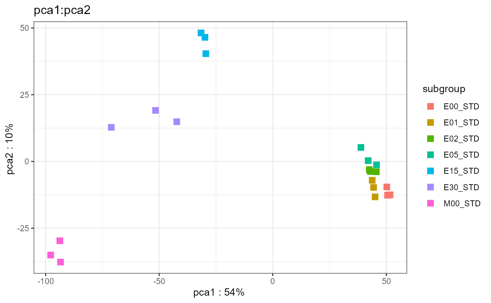
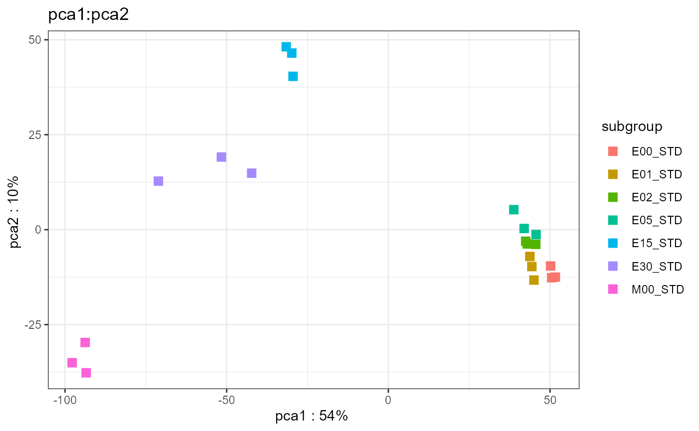
The phosphosites can be read in a similar fashion:
object <- read_phosphosites(
file = download_data('billing19.phosphosites.txt'),
proteinfile = download_data('billing19.proteingroups.txt'),
select_subgroups = c('E00_STD', 'E01_STD', 'E02_STD',
'E05_STD', 'E15_STD', 'E30_STD', 'M00_STD'),
pca = TRUE, fit = 'limma', plot = TRUE)
## Read C:\Users\abhagwa\AppData\Local\autonomics\autonomics\Cache/46a47b883e9_billing19.proteingroups.txt
## Infer subgroup from sample_ids
## Retain 21/33samples: ~subgroup %in% select_subgroups
## Replace NaN->NA for 77204/205338 values (in 5423/9778 features of 21/21 samples)
## Log2 transform
## Read C:\Users\abhagwa\AppData\Local\autonomics\autonomics\Cache/28e05676396b_billing19.phosphosites.txt
## Infer subgroup from sample_ids
## Retain 21/33samples: ~subgroup %in% select_subgroups
## Replace NaN->NA for 11144/296226 values (in 1290/14106 features of 21/21 samples)
## Log2 transform
## Filter features
## Retain 13968/14106 features: ~Reverse != "+"
## Retain 13826/13968 features: contaminant != '+'
## Retain 9691/13826 features: non-zero, non-NA, and non-NaN for some sample
## Filter 7072/9691 features: expr != 0 for at least two samples in some subgroup
## Retain 6034/7072 features: ~`Localization prob` >= min_localization_prob
## Add occupancies(phospho) = values(phospho) - values(proteins)
## Transform exprs
## Add PCA
## lmFit(~0 + subgroup)
## contrast ndown nup
## 1: E01_STD-E00_STD 0 4
## 2: E02_STD-E01_STD 1 3
## 3: E05_STD-E02_STD 31 20
## 4: E15_STD-E05_STD 1000 1085
## 5: E30_STD-E15_STD 649 477
## 6: M00_STD-E30_STD 1338 224 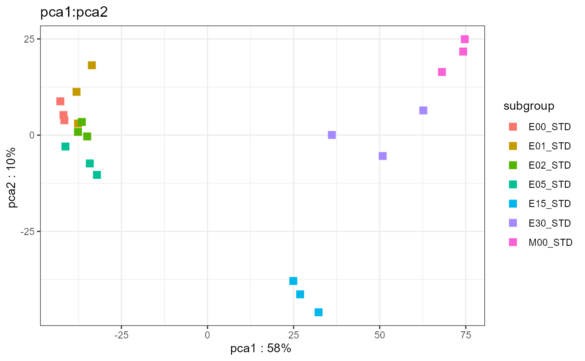
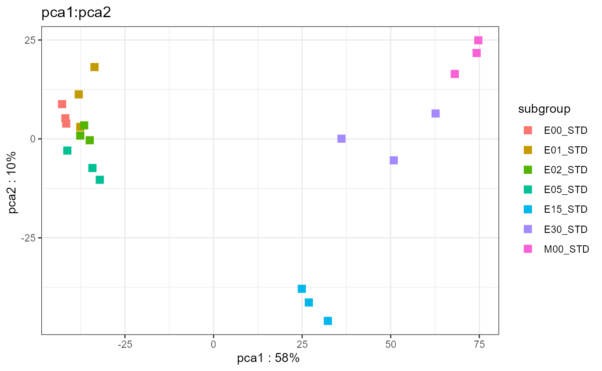
Metabolon
Metabolon delivers metabolomics results in the form of an xlsx file, with values of interest likely in the (second) OrigScale sheet. Features are laid out in rows, samples in columns, and additional feature/sample data are self-contained in the file. Metabolon data can be read/analyzed with the autonomics function read_metabolon, as illustrated below on the dataset of Halama and and Atkin (2018), who investigates the effects of hypoglycemia on a number of subjects (SUB) at four different time points (t0, t1, t2, t3):
object <- read_metabolon(
file = download_data('atkin18.metabolon.xlsx'), subgroupvar = 'SET',
pca = TRUE, fit = 'limma', block = 'SUB', plot = TRUE)
## Read: C:\Users\abhagwa\AppData\Local\autonomics\autonomics\Cache/46a459efbda_atkin18.metabolon.xlsx
## Log2 transform
## Add PCA
## lmFit(~0 + SET | SUB)
## dupcor `SUB`
## Warning in glmgam.fit(dx, dy, coef.start = start, tol = tol, maxit = maxit, :
## Too much damping - convergence tolerance not achievable
## contrast ndown nup
## 1: t1-t0 326 20
## 2: t2-t1 39 28
## 3: t3-t2 58 359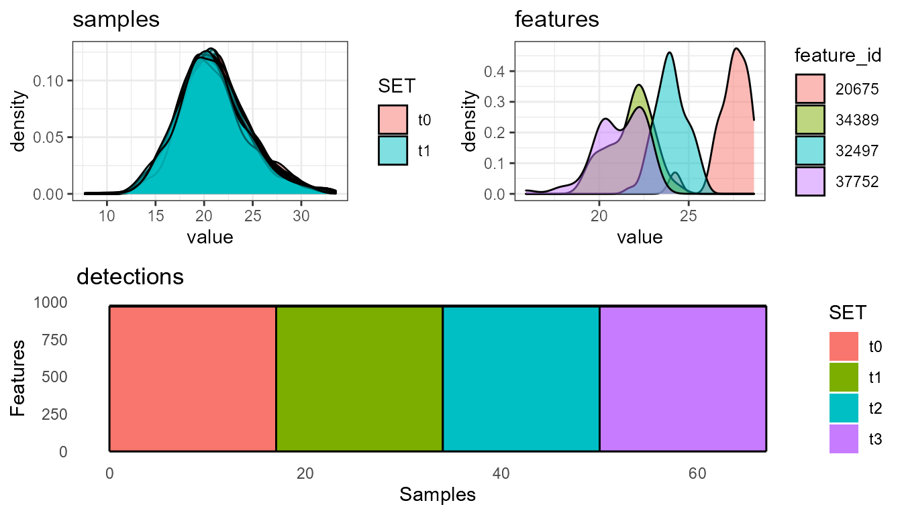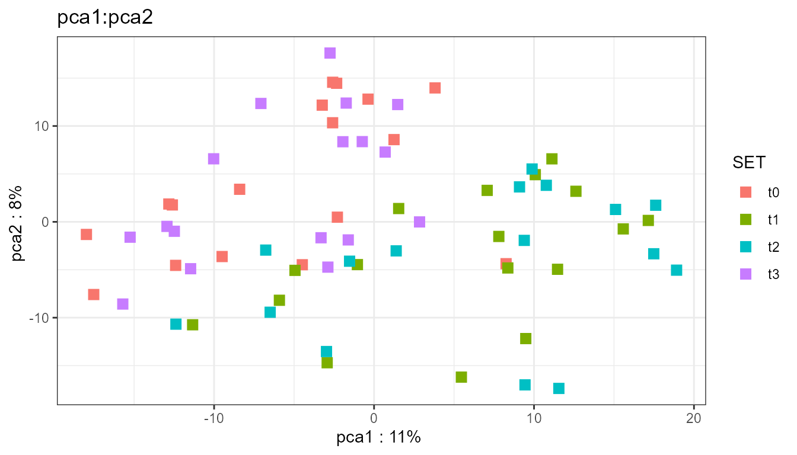
Somascan
Somascan results are returned in a txt file with extension .adat. Features are laid out in columns and samples in rows. Rectangles with feature/sample data are also contained in the file. The autonomics function read_somascan reads/analyzes SOMAscan files, additionally filtering samples/features for quality and type. This is illustrated on the above described dataset from Halama and and Atkin (2018), who investigated the effects of hypoglycemia on a number of subjects (SUB) at four different time points (t0, t1, t2, t3):
object <- read_somascan(
file = download_data('atkin18.somascan.adat'),
pca = TRUE, fit = 'limma', block = 'Subject_ID', plot = TRUE)
## Read: C:\Users\abhagwa\AppData\Local\autonomics\autonomics\Cache/2d00352b36b8_atkin18.somascan.adat
## Retain 1125/1129 features: ~ColCheck %in% ~feature_quality
## Log2 transform
## Add PCA
## lmFit(~0 + SampleGroup | Subject_ID)
## dupcor `Subject_ID`
## contrast ndown nup
## 1: t1-t0 1 2
## 2: t2-t1 2 2
## 3: t3-t2 65 47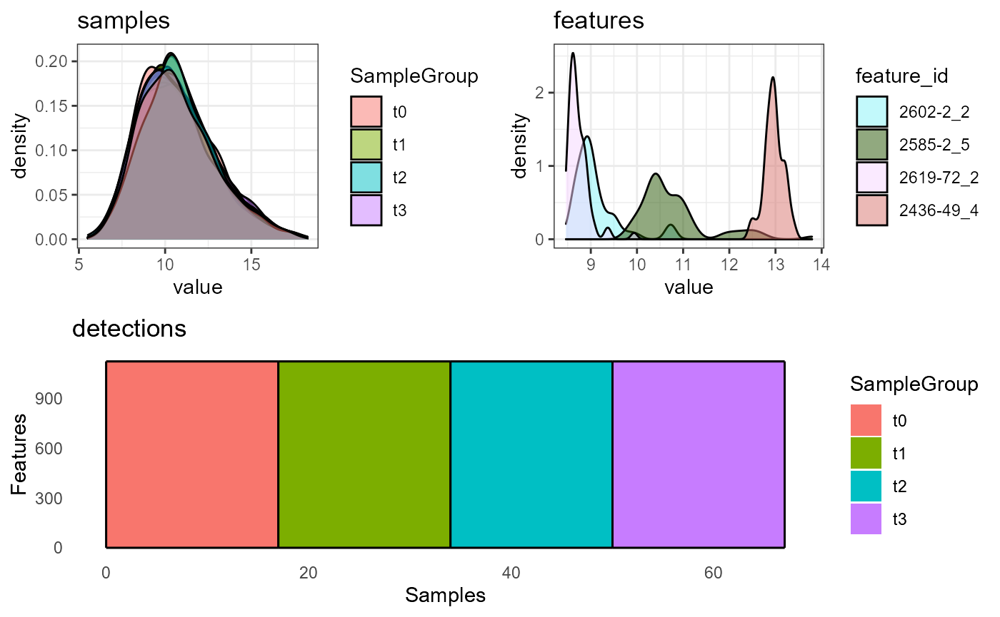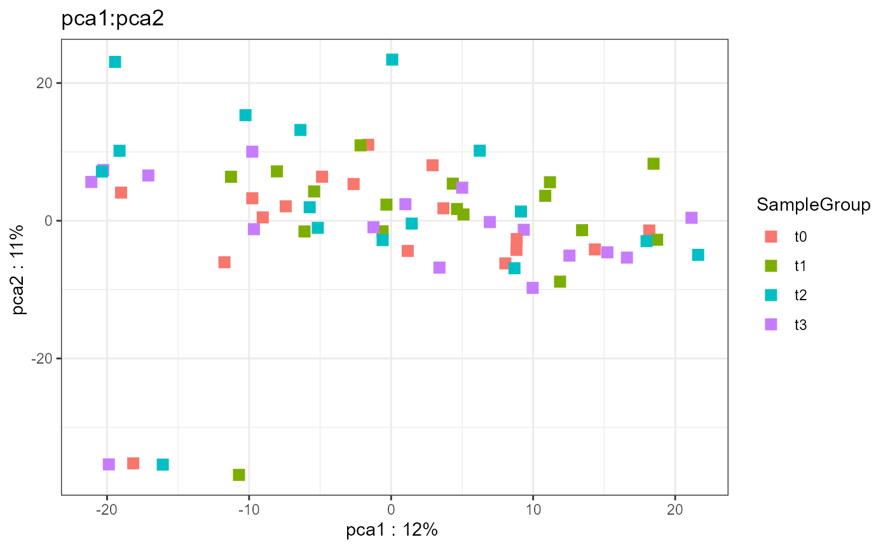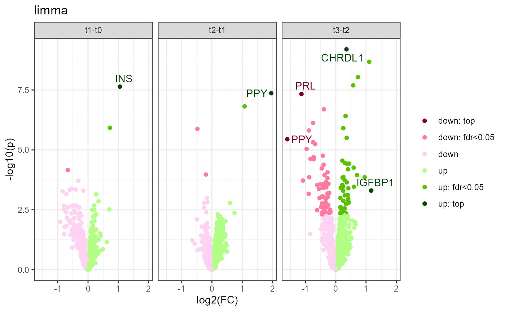
SessionInfo
sessionInfo()
## R version 4.0.3 (2020-10-10)
## Platform: x86_64-w64-mingw32/x64 (64-bit)
## Running under: Windows 10 x64 (build 19041)
##
## Matrix products: default
##
## locale:
## [1] LC_COLLATE=German_Germany.1252 LC_CTYPE=German_Germany.1252
## [3] LC_MONETARY=German_Germany.1252 LC_NUMERIC=C
## [5] LC_TIME=German_Germany.1252
##
## attached base packages:
## [1] stats graphics grDevices utils datasets methods base
##
## other attached packages:
## [1] autonomics_0.99.18 BiocStyle_2.18.1
##
## loaded via a namespace (and not attached):
## [1] assertive.base_0.0-7 colorspace_2.0-0
## [3] ellipsis_0.3.1 rprojroot_2.0.2
## [5] XVector_0.30.0 GenomicRanges_1.42.0
## [7] fs_1.5.0 rstudioapi_0.13
## [9] farver_2.0.3 assertive.sets_0.0-3
## [11] MultiAssayExperiment_1.16.0 ggrepel_0.9.1
## [13] bit64_4.0.5 AnnotationDbi_1.52.0
## [15] xml2_1.3.2 assertive.data.uk_0.0-2
## [17] codetools_0.2-18 R.methodsS3_1.8.1
## [19] knitr_1.30 assertive_0.3-6
## [21] assertive.data.us_0.0-2 rematch_1.0.1
## [23] dbplyr_2.0.0 R.oo_1.24.0
## [25] httr_1.4.2 BiocManager_1.30.10
## [27] readr_1.4.0 compiler_4.0.3
## [29] assertthat_0.2.1 Matrix_1.2-18
## [31] limma_3.46.0 htmltools_0.5.1
## [33] tools_4.0.3 gtable_0.3.0
## [35] glue_1.4.2 GenomeInfoDbData_1.2.4
## [37] dplyr_1.0.3 rappdirs_0.3.1
## [39] Rcpp_1.0.6 Biobase_2.50.0
## [41] cellranger_1.1.0 pkgdown_1.6.1
## [43] vctrs_0.3.6 assertive.files_0.0-2
## [45] assertive.datetimes_0.0-3 assertive.models_0.0-2
## [47] xfun_0.20 stringr_1.4.0
## [49] lifecycle_0.2.0 statmod_1.4.35
## [51] org.Hs.eg.db_3.12.0 edgeR_3.32.1
## [53] zlibbioc_1.36.0 scales_1.1.1
## [55] ragg_0.4.1 pcaMethods_1.82.0
## [57] hms_1.0.0 MatrixGenerics_1.2.0
## [59] parallel_4.0.3 SummarizedExperiment_1.20.0
## [61] GEOquery_2.58.0 assertive.matrices_0.0-2
## [63] assertive.strings_0.0-3 yaml_2.2.1
## [65] curl_4.3 memoise_1.1.0
## [67] gridExtra_2.3 ggplot2_3.3.3
## [69] stringi_1.5.3 RSQLite_2.2.2
## [71] S4Vectors_0.28.1 desc_1.2.0
## [73] BiocGenerics_0.36.0 Rsubread_2.4.2
## [75] GenomeInfoDb_1.26.2 rlang_0.4.10
## [77] pkgconfig_2.0.3 systemfonts_0.3.2
## [79] matrixStats_0.57.0 bitops_1.0-6
## [81] evaluate_0.14 lattice_0.20-41
## [83] assertive.data_0.0-3 purrr_0.3.4
## [85] labeling_0.4.2 assertive.properties_0.0-4
## [87] bit_4.0.4 tidyselect_1.1.0
## [89] assertive.code_0.0-3 magrittr_2.0.1
## [91] bookdown_0.21 R6_2.5.0
## [93] IRanges_2.24.1 generics_0.1.0
## [95] DelayedArray_0.16.0 DBI_1.1.1
## [97] withr_2.4.0 pillar_1.4.7
## [99] assertive.numbers_0.0-2 abind_1.4-5
## [101] RCurl_1.98-1.2 tibble_3.0.5
## [103] crayon_1.3.4 assertive.types_0.0-3
## [105] BiocFileCache_1.14.0 rmarkdown_2.6
## [107] locfit_1.5-9.4 grid_4.0.3
## [109] readxl_1.3.1 data.table_1.13.6
## [111] blob_1.2.1 digest_0.6.27
## [113] tidyr_1.1.2 R.utils_2.10.1
## [115] textshaping_0.2.1 stats4_4.0.3
## [117] munsell_0.5.0 assertive.reflection_0.0-5References
A M Billing, S S Dib, A M Bhagwat, I T da Silva, R D Drummond, S Hayat, R Al-Mismar, H Ben-Hamidane, N Goswami, K Engholm-Keller, M R Larsen, K Suhre, A Rafii, J Graummann (2019). Mol Cell Proteomics. 18(10):1950-1966. doi: 10.1074/mcp.RA119.001356.
A M Billing, H Ben Hamidane, S S Dib, R J Cotton, A M Bhagwat, P Kumar, S Hayat, N A Yousri, N Goswami, K Suhre, A Rafii, J Graumann (2016). Comprehensive transcriptomics and proteomics characterization of human mesenchymal stem cells reveals source specific cellular markers. Sci Rep. 9;6:21507. doi: 10.1038/srep21507.
R Fukuda, R Marin-Juez, H El-Sammak, A Beisaw, R Ramadass, C Kuenne, S Guenther, A Konzer, A M Bhagwat, J Graumann, D YR Stainier (2020). EMBO Rep. 21(8): e49752. doi: 10.15252/embr.201949752
A Halama, M Kulinski, S Dib, S B Zaghlool, K S Siveen, A Iskandarani, J Zierer 3, K S Prabhu, N J Satheesh, A M Bhagwat, S Uddin, G Kastenmüller, O Elemento, S S Gross, K Suhre (2018). Accelerated lipid catabolism and autophagy are cancer survival mechanisms under inhibited glutaminolysis. Cancer Lett., 430:133-147. doi:10.1016/j.canlet.2018.05.017
A Halama, H Kahal, A M Bhagwat, J Zierer, T Sathyapalan, J Graumann, K Suhre, S L Atkin (2018). Metabolic and proteomics signatures of hypoglycaemia in type 2 diabetes. Diabetes, obesity and metabolism, https://doi.org/10.1111/dom.13602